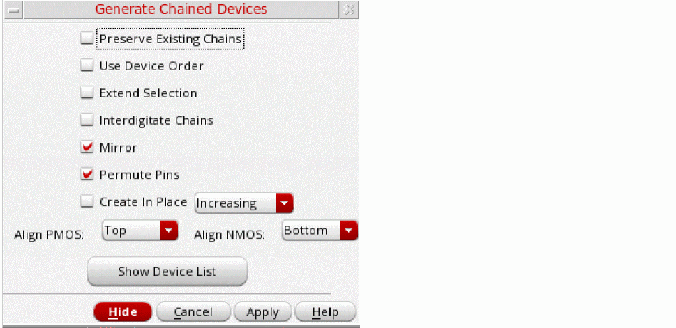
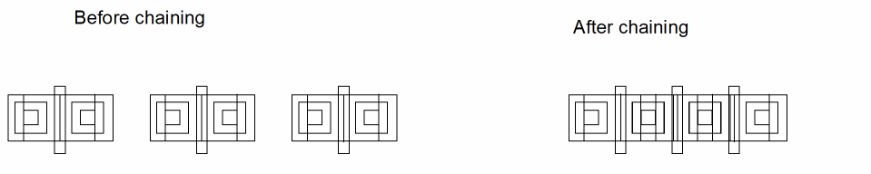

Chaining Devices Interactively
To chain transistors interactively while you are editing a layout:
-
From the layout window menu bar, choose Connectivity – Generate – Chained Devices.
The Generate Chained Devices form appears.
 -
Set the options you require.
- To prevent existing chains from being broken during interactive chaining, select Preserve Existing Chains.
-
To maintain the relative starting positions of the selected devices in the generated chain, select Use Device Order.
-
To enable the dummy instances to change their nets on both sides during interactive chaining to support abutment on both sides, set the
chainDummyFlexBothEndNetsenvironment variable totrue.
When Use Device Order is deselected, dummy and unconnected devices are not chained. These devices are placed down separately in the order: chains, dummies, and then unconnected devices. Part-connected devices are chained, where possible, with nets assigned to enable device abutment.
IfuseDeviceOrderis set tot, advanced node devices are chained even if their S/D pins are on different nets. In this case, the devices are abutted on dummy pins. -
To enable the dummy instances to change their nets on both sides during interactive chaining to support abutment on both sides, set the
- To select entire chains with a single click, choose Extend Selection. Otherwise, each click selects an individual device, mfactored device, or folded leg.
- To identify nodes that qualify as pseudoparallel connections so that no current passes through the connecting nets, choose Interdigitate Chains.
- To mirror the instances in a chain, choose Mirror.
- To permute the instances in a chain, choose Permute.
- To create the device chains on layout canvas at the same location as the left-most instance selected for chaining, choose Create In Place. If at least one of the instances selected for chaining are on a row region, the chain is created at the same location as the left-most instance in the row region.
- To define the alignment of p- or n-type devices, select an appropriate alignment using the Align PMOS or Align NMOS drop-down list. By default, the NMOS and PMOS alignment is controlled by the current value of the environment variables, lxChainAlignNMOS and lxChainAlignPMOS, respectively.
-
If only one of the devices to be abutted has a bulk, ensure that the chainUseDeviceOrder and chainAllowSingleBulk environment variables are set to
t. - If you are using a FinFET design, the alignment options will be displayed as Align PFIN and Align NFIN.
- In the layout canvas, select the devices you want to chain.
Alternatively, click the Show Device List button to see the list of devices available for chaining. The list box appears in the Generate Chained Devices form.
You can also select devices in the layout canvas before you start the command. In this case, the selected devices are highlighted in the form when it opens.
The selected devices are highlighted in the canvas. -
Click Apply and move the cursor into the layout canvas.
The selected transistors appear as an image of a transistor chain that follows the cursor.
If the majority of the selected devices are oriented vertically, the generated chain is also oriented vertically.- Click the middle mouse button to rotate a chain by R90.
-
Shift-click the middle mouse button to flip a chain alternately about its X and Y axes.
You must havelxBindKeys.illoaded in order to use this functionality. -
Click the layout canvas where you want to place the chained transistors.
The transistors are placed where you click.

You can also chain dummy instances interactively by using the procedure described above. If you select the Use Device Order check box, dummy devices are treated as regular devices during the chaining operation and can support abutment on one side or on both sides depending on the state of the chainDummyFlexBothEndNets environment variable. Dummy devices with floating S/D nets are also supported for interactive chaining. However, if Use Device Order is not selected, dummies are ignored during chaining. As a result, irrespective of their order, dummies are placed at the end of the chain and their original connectivity is retained.
Chains that comprise only NMOS or only PMOS transistors are aligned with the bottom edge. If you use the Generate All From Source command to create a cluster comprising both an NMOS and a PMOS transistor, the PMOS is placed on top aligned to the lower edge, and the NMOS is placed below it aligned to the upper edge.
Folded transistors are chained with the number of folds specified in the Generate Folded Devices form.
Related Topics
Return to top